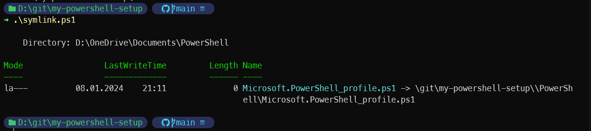

Powershell
Store your powershell profile in a git repo using symbolic links
Ref. Use symlinks to version-control your PowerShell profile with Git
This can be useful if you want to share the same powershell profile on different computers/enironments.
In order to use powershell profile, remote signed policy is needed:
Create a repo named something like my-powershell-setup
Add symlink.ps1 script like:
# Avoiding drive letter to cope with using c on one computer and d on another:
$gitRepoPath = "/git/my-powershell-setup/"
$symlinkParams = @{
Path = $PROFILE
Value = "$gitRepoPath/PowerShell/Microsoft.PowerShell_profile.ps1"
ItemType = 'SymbolicLink'
Force = $true
}
New-Item @symlinkParams
Create a (most likely copy your existing) powershell profile in the repo:
Run the symlink script in powershell admin mode: 
prompt line
Add these lines to the file:
#-----------------------------------------------------------
# Prompt theme engine
# https://ohmyposh.dev/
#-----------------------------------------------------------
#Import-Module posh-git
# interesting themes: cobalt2 multiverse-neon peru powerlevel10k_rainbow
#oh-my-posh init pwsh --config "$env:POSH_THEMES_PATH\the-unnamed.omp.json" | Invoke-Expression
#oh-my-posh init pwsh --config "$env:POSH_THEMES_PATH\powerlevel10k_rainbow.omp.json" | Invoke-Expression
#oh-my-posh init pwsh --config "$env:POSH_THEMES_PATH\paradox.omp.json" | Invoke-Expression
oh-my-posh init pwsh --config "$env:POSH_THEMES_PATH\multiverse-neon.omp.json" | Invoke-Expression
commands history
#-----------------------------------------------------------
# Scrolling/searching through history
#-----------------------------------------------------------
Import-Module PSReadLine
Set-PSReadLineOption -PredictionSource HistoryAndPlugin
Set-PSReadLineOption -PredictionViewStyle ListView
Set-PSReadLineOption -EditMode Windows
Set-PSReadLineOption -EditMode Windows
Set-PSReadLineOption -EditMode Windows
Set-PSReadLineKeyHandler -Key UpArrow -Function HistorySearchBackward
Set-PSReadLineKeyHandler -Key DownArrow -Function HistorySearchForward
profile
#Import-Module -Name AzureADPreview -UseWindowsPowershell
#-----------------------------------------------------------
# Prompt theme engine
# https://ohmyposh.dev/
#-----------------------------------------------------------
Import-Module posh-git
oh-my-posh init pwsh --config "$env:POSH_THEMES_PATH\paradox.omp.json" | Invoke-Expression
#-----------------------------------------------------------
# Scrolling/searching through history
#-----------------------------------------------------------
Import-Module PSReadLine
Set-PSReadLineOption -PredictionSource HistoryAndPlugin
Set-PSReadLineOption -PredictionViewStyle ListView
Set-PSReadLineOption -EditMode Windows
Set-PSReadLineOption -EditMode Windows
Set-PSReadLineOption -EditMode Windows
Set-PSReadLineKeyHandler -Key UpArrow -Function HistorySearchBackward
Set-PSReadLineKeyHandler -Key DownArrow -Function HistorySearchForward
#-----------------------------------------------------------
# Winget auto completer
# https://github.com/microsoft/winget-cli/blob/master/doc/Completion.md
#-----------------------------------------------------------
Register-ArgumentCompleter -Native -CommandName winget -ScriptBlock {
param($wordToComplete, $commandAst, $cursorPosition)
[Console]::InputEncoding = [Console]::OutputEncoding = $OutputEncoding = [System.Text.Utf8Encoding]::new()
$Local:word = $wordToComplete.Replace('"', '""')
$Local:ast = $commandAst.ToString().Replace('"', '""')
winget complete --word="$Local:word" --commandline "$Local:ast" --position $cursorPosition | ForEach-Object {
[System.Management.Automation.CompletionResult]::new($_, $_, 'ParameterValue', $_)
}
}
#-----------------------------------------------------------
# General aliases/overview
#-----------------------------------------------------------
function Get-MyAliases {
Get-Alias gloc, cypa, ggit, opprof, opnpp, path
}
New-Alias a Get-MyAliases
#-----------------------------------------------------------
function Set-Title {
param(
[string]
$title
)
$Host.UI.RawUI.WindowTitle = $title
}
#-----------------------------------------------------------
function Open-MyPowershellProfile {
code $PROFILE
}
New-Alias opprof Open-MyPowershellProfile
#-----------------------------------------------------------
function Open-NotepadPlusPlus {
start notepad++.exe
}
New-Alias opnpp Open-NotepadPlusPlus
#-----------------------------------------------------------
function Get-MyPathListedOnePerLine {
$Env:Path.split(";")
}
New-Alias path Get-MyPathListedOnePerLine
#-----------------------------------------------------------
# Location aliases
#-----------------------------------------------------------
function Get-MyLocationAliases {
Get-Alias slprix, slgit, slprixtest
}
New-Alias gloc Get-MyLocationAliases
#-----------------------------------------------------------
#-----------------------------------------------------------
function Set-LocationGit {
Set-Location c:\git\
}
New-Alias g Set-LocationGit
#-----------------------------------------------------------
# Git aliases
#-----------------------------------------------------------
#-----------------------------------------------------------
function Get-GitBranch {
git branch
}
New-Alias b Get-GitBranch
#-----------------------------------------------------------
function Remove-Branch {
git branch --show-current| ForEach-Object { & git checkout master && git branch -d $_ && git pull }
}
New-Alias deleteBranch Remove-Branch
#-----------------------------------------------------------
function Remove-Branch-Main {
git branch --show-current| ForEach-Object { & git checkout main && git branch -d $_ && git pull }
}
New-Alias deleteBranchMain Remove-Branch-Main
#-----------------------------------------------------------
#-----------------------------------------------------------
function Get-MyGitAliases {
Get-Alias ggitv, istash, ipop, uPullMaster, uPullMain | Format-Table -AutoSize
}
New-Alias ggit Get-MyGitAliases
#-----------------------------------------------------------
#-----------------------------------------------------------
function Get-GitLogTree {
git log --all --graph --decorate --oneline
}
New-Alias logtree Get-GitLogTree
New-Alias l Get-GitLogTree
#-----------------------------------------------------------
#-----------------------------------------------------------
function Get-GitVersion {
git --version
}
New-Alias ggitv Get-GitVersion
#-----------------------------------------------------------
function Invoke-MyGitStash {
git stash
}
New-Alias istash Invoke-MyGitStash
#-----------------------------------------------------------
function Invoke-MyGitPop {
git stash pop
}
New-Alias ipop Invoke-MyGitPop
function Push-Branch {
git branch --show-current| ForEach-Object { & git push --set-upstream origin $_ }
}
New-Alias pushBranch Push-Branch
#-----------------------------------------------------------
function Get-GitStatus {
git status
}
New-Alias s Get-GitStatus
#-----------------------------------------------------------
function Set-TitleBranch {
$Host.UI.RawUI.WindowTitle = git branch --show-current
}
New-Alias t Set-TitleBranch
#-----------------------------------------------------------
function Update-MyGitBranchPullAndRebaseMaster {
git pull --rebase origin master
}
New-Alias uPullMaster Update-MyGitBranchPullAndRebaseMaster
#-----------------------------------------------------------
function Update-MyGitBranchPullAndRebaseMain {
git pull --rebase origin master
}
New-Alias uPullMain Update-MyGitBranchPullAndRebaseMain
#-----------------------------------------------------------
# Cypress aliases
#-----------------------------------------------------------
function Get-MyCypressAliases {
Get-Alias cypopendev, cypopentest, cyprundev, cypruntest
}
New-Alias cypa Get-MyCypressAliases
#-----------------------------------------------------------
#-----------------------------------------------------------
function Open-CypressGui-Dev {
npx cypress open
}
New-Alias cypopendev Open-CypressGui-Dev
#-----------------------------------------------------------